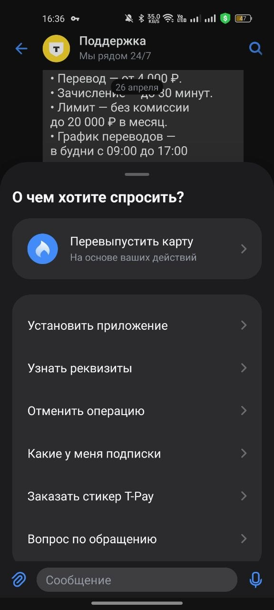
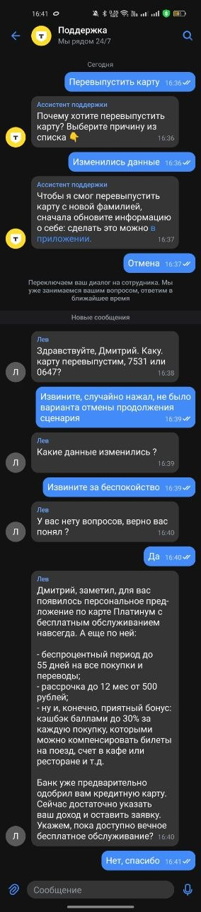

Реклассификация 22,7%
Резерв года 2 — без неё «Новые сценарии из 22,7%» не получат материала.
Три блока: о себе и продуктовые кейсы, разбор UX чата поддержки Т-Банка, план достижения 60% автоматизации с командой за 24 месяца.
Дмитрий Ярочкин
Контекст, кейс успеха (FM Logistic), кейс провала (Quest), кейс «метрика обманула» (HSTU в Яндексе).
Ваша роль, компания, продукт. Для кого этот продукт, какую задачу решает, за что отвечали лично вы.
Опишите ситуацию, когда метрика показывала рост, но продукт на самом деле становился хуже (или наоборот). Как вы это обнаружили и какие действия предприняли.
Я ML-инженер с продуктовым уклоном, 2 курс Центрального университета (трек «Искусственный интеллект»). Мой основной интерес — AI-продукты, где важно не только обучить модель, но и довести решение до бизнес-результата: найти пользователя, понять задачу, собрать MVP и выбрать метрику, которая отражает реальную ценность.
Кликните на проект, чтобы прочитать подробности.
Импортозамещающий AI-конструктор сайтов с block-based UI, SEO-оптимизацией и интеграцией платёжных систем. Сайт за 30 минут диалога вместо недель и сотен тысяч ₽ на агентство.
МСБ-клиенты российских банков. Сейчас в переговорах с двумя банками по партнёрству.
LangChain LangGraph FastAPI Pydantic Redis PyTorch
Очередь задач на Redis для асинхронной генерации сайтов — отказоустойчивость и масштабирование под нагрузку.
Планирую применить HRM-архитектуру (arXiv:2506.21734, arXiv:2510.04871) — на ARC-AGI с ограниченным количеством состояний обходит LLM. По заполненной форме генерируем подходящую структуру сайта через HRM и передаём как доп. контекст первому агенту — на старте сильно дешевле, чем разворачивать и тюнить отдельную LLM.
Агентная система для упрощения записи пациентов в медучреждения. RAG-стек поверх базы услуг и расписания врачей.
Пилот.
RAG-поддержка по корпоративной базе знаний РЖД — автоматизация типовых операционных запросов сотрудников.
Пилот.
Сервис для поиска друзей вокруг студенческих и культурных мероприятий — снижает порог входа в новые социальные круги в студенческой среде.
Победители хакатона Т-Банк × МГУ — получили поддержку МГУ для дальнейшего развития проекта. Сейчас также участвуем в акселераторе ЦУ × Т-Банка.
AR-решение на smart glasses для складских работников: навигация по стеллажам, голосовой/AR-ассистент для подбора и контроля заказов. Совместно с китайской командой по smart-glasses.
В работе — переговорный/discovery-этап.
Та же логика — кликните на роль, чтобы прочитать подробности.
Команда рекомендательных систем. Исследование современных подходов — sequential models, табличные данные.
В основном аналитические задачи.
Лидер рынка экспресс-доставки (Q-commerce) в РФ, готовится к экспансии в новые страны.
1 место — кейс-хакатон Центрального Университета по сервисам для студентов · 1 место — AI & Business хакатон · 1 место — Дататон по аналитике данных (2024) · 1 место — First Tech Challenge по робототехнике (2022) · 1 место — Предпроф · 3 место — Дататон «Выбор локации для ресторана» (2024) · 3 место — Хакатон Т-Банк × МГУ (2025).
Кейс с чемпионата международной 3PL-компании «Логистика 2.0», апрель 2026. У FM Logistic Россия (выручка 30,1 млрд ₽ за 2024, +24,6% год к году) сильная складская база, но нет express-вертикали ≤ 60 минут. При этом доля независимых 3PL в e-com упала за 7 лет с 34% до 5,2%, а карточки с express на Ozon показывают +30% к обороту. Запускать самим долго и дорого — нужен партнёр.
| Вариант | Стоимость | Срок | Покрытие | Риск |
|---|---|---|---|---|
| Build (строить самим) | 148 млн ₽ / 1-й год | 12–18 мес | 1 город | Высокий |
| Buy / Partner (с «Даркстор у дома») | 2,7 млн ₽ OPEX | 1 квартал | 88 городов | Ниже build |
| Do nothing | 0 ₽ | — | — | Сохраняет позиции, без роста |
Проект прошёл в финал конкурса FM Logistic, защита впереди. Это ещё не закрытая сделка — но это сильный продуктовый результат до стадии защиты: партнёр найден и предварительно согласен на пилот, unit-экономика собрана, KPI-гейты прописаны. Дальше — подтверждение от FM Logistic.
Почему я считаю это продуктовым результатом, а не презентацией. К моменту защиты у решения собраны три обязательных слоя: договорённость (партнёр согласен на пилот), экономика (unit-модель и точка безубыточности на цифрах, а не «по ощущению») и проверочные ворота (KPI с порогами GO / PIVOT / STOP). С таким набором решение готово быть запущенным и скорректированным по факту, а не «ещё раз обсуждённым» — это и отличает продукт от слайда.
Зима 2024–2025. На хакатоне командой из 4 человек собрали MVP сервиса для бросания курения. Чтобы не оставлять проект просто так, я вышел на американский Quest с предложением форка под смежный сценарий — отказ от зависимостей. Связался, договорился о созвоне, рассказал о нас и о идее, но получил отказ: они уже сами строили этот сценарий, просто публично не выкатили. Предложили мягкий вариант — использовать их API без форка — но это убирало главный смысл проекта (ownership и международная экспансия), мы становились внешним экспериментом на чужой платформе.
Я пришёл к партнёру с готовой жёсткой формой сотрудничества (форк + ownership + международная экспансия) до того, как проверил, нужна ли им именно эта форма. Понял на самом созвоне, когда они спокойно сказали «у нас уже есть наработки».
Цена ошибки: я не оставил себе пространства для торга — у Quest на руках был мягкий вариант (API-доступ), который мы могли бы переосмыслить и вытащить из него ценность, если бы пришли с открытой повесткой. Вместо этого я сжёг шанс на гибкий формат, потому что вся презентация была построена вокруг одной конструкции, и переключаться на ходу было поздно.
Чем закончилось: партнёрство в формате форка не состоялось, на мягкий вариант (API-доступ) мы не пошли — он не давал того, ради чего проект задумывался. Сам проект после хакатона свернули: без партнёра в США международной экспансии не получалось, а конкурировать с уже строящимся Quest на их рынке не было смысла. Главным результатом для меня стал не продукт, а рабочая привычка проверять партнёра до питча.
В FM Logistic применил: первый шаг был именно самостоятельная проверка экономики, потом контакт с партнёром.
Стажировка в Яндексе, рекомендательные системы. В этот момент выходит хайповая статья от Meta — «Actions Speak Louder than Words» — про новую архитектуру HSTU для sequential recommendations с большими приростами офлайн-метрик на их данных. Мне ставят задачу: применить подход на нашем стеке, проверить, повторяются ли приросты на наших данных, и если да — продвигать в продакшн.
Я воспроизвёл подход, обучил модель. Офлайн-метрики (NDCG, hit rate) выросли — и у HSTU, и у альтернативных архитектур. Выглядело как доказанный результат. Но насторожил слишком равномерный рост у разных архитектур — обычно такой эффект так не работает. Стал копать и нашёл комментарий команды МТС: препроцессинг timeline вместе с positional embedding создаёт утечку данных из будущего — события из «будущего» попадают в контекст текущего пользователя.
Модель не научилась лучше рекомендовать. Она научилась использовать данные, которых в продакшне у неё не будет. Офлайн-метрика оторвалась от продуктовой реальности.
Разбор UX чата поддержки Т-Банка (3 проблемы, главный фокус — «Отмена» уходит в fallback на оператора). Top — Duolingo: streak + лиги, soft streak как защита от анти-паттерна.
Откройте главную страницу поддержки Т-Банка в приложении (Главная → Чат).
Приложите ссылку на один сервис или продукт, который вы считаете выдающимся. Объясните: что именно в нём сделано хорошо, почему это работает и что можно было бы улучшить.
Скриншоты внутри настоящих рамок телефона — прокручиваются внутри экрана, чтобы видеть всю сессию целиком.


В сценарии «Перевыпустить карту» бот предложил обновить данные в приложении. Я текстом написал «Отмена», ожидая выйти из шага или вернуться назад — система ответила «Переключаем ваш диалог на сотрудника». У бота просто нет распознавания команды «отмена / назад» внутри сценария: любой ввод вне ожидаемых слотов агент не понимает, и fallback закрывается через эскалацию.
На этапе выбора причины перевыпуска нет кнопки «Назад» или «Вернуться в меню». Если пользователь нажал не туда или передумал — единственный визуальный выход это эскалация. В одних сценариях inline-кнопки есть, в других — нет; это баг между старым и новым UX-слоями.
Бот пишет «обновите информацию о себе в приложении» с подчёркнутой ссылкой, но при тапе на неё ничего не происходит. Пользователь сам ищет раздел в приложении, ошибается, возвращается в чат — и снова попадает в тот же сценарий с теми же кнопками.
Это самый частый источник ложных эскалаций и при этом дешёвый фикс на стороне агента — добавить распознавание команды «отмена / назад / вернуться» и обработку до fallback'а.
Проблема 2 решается тем же редизайном попутно. Проблема 3 (deep-link) требует интеграции с экранами приложения и более длинного цикла. «Отмена» проверяема за один спринт, эффект виден сразу.
Часть случаев в категориях «хочет закончить диалог» (0,4%) и «зовёт оператора в середине сценария» (0,8%) — это, по моей оценке, нераспознанные команды вроде «отмена / назад». Беру консервативно ~0,6% всех чатов:
52 ₽ — допущение по ФОТ-стоимости одной эскалации (4 минуты × ~13 ₽/мин операторо-времени, индустриальный бенчмарк банковского контакт-центра). Точное число у Т-Банка может отличаться. Главное здесь не сама экономия в 4,5 млн, а то что текущие 70% переводов на оператора содержат часть случайных и UX-спровоцированных эскалаций — поэтому потенциал автоматизации занижен.
В каждом сценарии после регистратора шага добавить распознавание команды «отмена / назад / отменить / вернуться» как возврат на предыдущий шаг сценария, а не fallback. Все агенты уже понимают команду «оператор» в тексте — нужно расширить тот же механизм на «отмена / назад» и обрабатывать его до логики выхода. «Назад» и «Отмена» становятся нативным шагом сценария, без нужды в отдельных кнопках под каждым ответом бота.
Кнопка «Отменить вызов оператора» в окне ожидания, пока не пришло первое сообщение сотрудника. У пользователя есть несколько секунд, чтобы успеть подкликнуть, если эскалация случилась по ошибке. Также нужен новый код причины accidental_operator_call («случайный вызов оператора»), так как это новая категория сценария.
accidental_operator_call
Автоматизация растёт не за счёт удержания клиента в боте, а за счёт устранения UX-ошибок: часть переводов на оператора сейчас возникает не из-за реальной потребности в сотруднике, а из-за нераспознанных команд вроде «отмена / назад».
Поэтому метрики выбраны парами: метрика успеха ловит реальный эффект фикса, а контр-метрики проверяют, что мы не передавили на клиента и не сломали оператора. Без этой пары рост automation легко получить формально — например, если клиент просто бросит чат и не вернётся в течение замера.

Duolingo превратил повторяемое действие в привычку через ясный прогресс и мягкое социальное давление. Самая сильная механика — streak + лиги. Streak создаёт личную ставку (loss aversion: чем дольше серия, тем больнее терять; Streak Freeze монетизируется через подписку). Лиги добавляют социальное давление без графа друзей: ты автоматически попадаешь в группу из ~30 анонимов твоего уровня, нижние вылетают.
По публичной отчётности компании DAU/MAU держится на уровне ~35% — для приложения для обучения это аномально высокий показатель.
Две силы складываются мультипликативно: страх потерять стрик на глазах у лиги — качественно другая интенсивность, чем по отдельности. Обе механики самовоспроизводимые. Важно для PM: работает на нулевом графе данных — старт с первой сессии, большинству retention-механик в финтехе нужна поведенческая история.
Та же сила превратилась в анти-паттерн: часть пользователей пишет в коммьюнити, что streak воспринимается как принуждение, а не как помощь. Я бы ввёл soft streak как опцию: «5 активных дней из 7 = стрик сохраняется». Гипотеза для A/B: long-term retention (12 месяцев) у когорты с soft-стриком +2–4 п.п.
Duolingo силён не streak'ом сам по себе, а тем, что превращает повторяемое действие в привычку через понятный прогресс и мягкое социальное давление. В банковских механиках лояльности (кэшбек-категории, статусы, миссии) ту же логику можно применять осторожно — без ощущения принуждения, чтобы пользователь воспринимал прогресс как помощь, а не как дедлайн.
24 месяца, четыре волны: данные → пробелы сценариев → контекст и формулировки → масштабирование. Цель: 60% качественной автоматизации без ухудшения клиентского опыта.
Вы — продакт-менеджер в Т-Банке. В вашей зоне ответственности — чат-бот поддержки. Текущая доля автоматизации (доля чатов, где бот решил вопрос клиента без участия оператора) составляет 30%. Цель бизнеса — достичь 60% за 2 года, сохранив качество клиентского опыта.
Полная таблица из задания — 25 категорий с долями от всех чатов. Я их группирую в продуктовые кластеры (см. 3.2) и работаю с кластерами, а не со строками.
| Категория | Доля |
|---|---|
| Неклассифицированные причины перевода | 22,7% |
| Бот отключён для сегмента (VIP, гость, должник) | 9,6% |
| Бот не смог продолжить — не хватает ветки сценария | 6,7% |
| Продолжение предыдущего диалога (контекст потерян) | 5,4% |
| Интент распознан, но ответа в сценарии нет | 3,3% |
| Бот не знает такого намерения | 3,1% |
| Клиент сразу зовёт оператора | 3,0% |
| Техническая ошибка бота | 2,6% |
| Клиент спрашивает в тему ответа (follow-up) | 2,3% |
| Интент есть, но не поняли формулировку | 1,7% |
| Клиент повторяет вопрос после ответа бота | 1,4% |
| Бот не смог распарсить ответ клиента (слоты) | 1,3% |
| Клиент зовёт оператора после ответа бота | 1,1% |
| Клиент выразился слишком общо | 1,0% |
| Ошибка классификации интента | 0,9% |
| Клиент отправил только картинку/файл | 0,8% |
| Клиент зовёт оператора в середине сценария | 0,8% |
| Выражает намерение в нескольких сообщениях | 0,4% |
| Отвечает картинкой внутри сценария | 0,4% |
| Хочет закончить диалог | 0,4% |
| Бот дал неперсонализированный/общий ответ | 0,3% |
| Другое (бот не понял) | 0,3% |
| Несколько вопросов в одном сообщении | 0,2% |
| Другое (бот понял, но не решил) | 0,2% |
| Бот дал неверный ответ | 0,1% |
| Итого переводов на оператора | 70% |
Составьте план достижения 60% автоматизации. В плане должно быть понятно:
Бизнес-цель — увеличить автоматизацию чат-бота с 30% до 60% за 24 месяца, сохранив качество клиентского опыта. Я считаю успехом не формальное удержание клиента в боте, а реально решённое обращение: бот помог без оператора, и клиент не вернулся с той же темой в течение 7 дней.
Сейчас бот решает около 360 тыс. чатов в месяц, а на оператора уходит около 840 тыс. Чтобы выйти на 60%, нужно, чтобы бот качественно решал ещё около 360 тыс. чатов в месяц.
| Состояние | Расчёт | Средневзвешенный CSAT |
|---|---|---|
| Сейчас | 0,30 × 3,2 + 0,70 × 4,1 | ≈ 3,83 |
| 60% без улучшения качества | 0,60 × 3,2 + 0,40 × 4,1 | ≈ 3,56 |
Это не точный прогноз, а проверка логики: 60% автоматизации нельзя достигать через ухудшение клиентского опыта. Поэтому план строится в двух параллельных треках: расширение покрытия типовых сценариев и повышение качества решений.
22,7% переводов не классифицированы, поэтому сначала нужно понять, что внутри этой категории.
Если у бота нет ветки, ответа или известного намерения, это самый прямой источник роста автоматизации.
Это контекст, follow-up, повтор вопроса, непонятая формулировка, слоты и несколько сообщений.
Отключённые сегменты, особенно VIP и должники, нельзя использовать как быстрый источник роста без отдельной проверки, потому что цена ошибки там выше.
Логика плана: сначала убрать слепую зону и дешёвые искажения в данных, затем закрыть самые понятные сценарные пробелы, потом улучшать качество диалога и только после этого аккуратно заходить в сегменты с повышенным риском.
Чтобы не строить план по 25 разрозненным строкам, я сначала объединяю причины переводов в продуктовые кластеры. Это показывает, где есть понятная механика решения, а где сначала нужна диагностика.
| Кластер | Из чего складывается | Сумма |
|---|---|---|
| Неклассифицированные причины | Неклассифицированные причины перевода 22,7% | 22,7% |
| Отключённые сегменты | Бот отключён для сегмента: VIP / гость / должник 9,6% | 9,6% |
| Пробелы сценариев / покрытия | Не хватает ветки сценария 6,7% + интент распознан, но ответа нет 3,3% + бот не знает намерения 3,1% | 13,1% |
| Контекст и follow-up | Продолжение предыдущего диалога / контекст потерян 5,4% + клиент спрашивает в тему ответа 2,3% + клиент повторяет вопрос после ответа бота 1,4% | 9,1% |
| Распознавание формулировок / маршрутизация | Интент есть, но не поняли формулировку 1,7% + клиент выразился слишком общо 1,0% + ошибка классификации интента 0,9% + выражает намерение в нескольких сообщениях 0,4% + несколько вопросов в одном сообщении 0,2% + другое: бот не понял 0,3% | 4,5% |
| Парсинг ответа клиента / слоты | Бот не смог распарсить ответ клиента 1,3% | 1,3% |
| Клиент зовёт оператора | Клиент сразу зовёт оператора 3,0% + зовёт оператора после ответа бота 1,1% + зовёт оператора в середине сценария 0,8% | 4,9% |
| Технические ошибки и качество ответа | Техническая ошибка бота 2,6% + неперсонализированный/общий ответ 0,3% + другое: бот понял, но не решил 0,2% + бот дал неверный ответ 0,1% | 3,2% |
| Мультимодальность | Клиент отправил только картинку/файл 0,8% + отвечает картинкой внутри сценария 0,4% | 1,2% |
| Завершение диалога | Хочет закончить диалог 0,4% | 0,4% |
| Итого переводов на оператора | 70,0% | |
Логика построения roadmap такая: сначала я группирую причины переводов в кластеры, затем считаю размер каждого кластера, после этого оцениваю, какую долю кластера можно реалистично закрыть без ухудшения CSAT и роста повторных обращений. Поэтому ожидаемый вклад инициатив считается не «сверху», а по формуле:
Дальше приоритизирую инициативы по четырём критериям: размер проблемы, понятность механики решения, риск для клиента и нагрузка на команду. Поэтому сначала идут неизвестные причины и самые понятные сценарные пробелы, а более рискованные зоны — отключённые сегменты, VIP, генеративные ответы и память между сессиями — не попадают в основной источник роста без отдельной проверки.
Самый большой блок — 22,7% неизвестных причин. Пока он не разобран, нельзя честно сказать, какие инициативы доведут нас до 60%. Из известных кластеров самые понятные источники роста — пробелы сценариев, контекст/follow-up, распознавание формулировок и техническая стабильность.
Разбираю 22,7% неизвестных переводов, уточняю причины эскалаций, отдельно проверяю вызовы оператора как возможную UX-проблему из Блока 2, исправляю самые частые технические ошибки.
Что выходит на руки к концу волны: новая карта причин переводов (вместо 22,7% «неизвестно»), список топ-сценариев для волны 2, патчи на самые частые техошибки, валидация UX-выхода «отмена / назад» из Блока 2 (подтверждено / опровергнуто).
Беру ситуации, где боту не хватает ветки, ответа или понятного следующего шага. Новые ветки сначала проверяются в тестовом режиме, затем постепенно раскатываются на 10%, 25%, 50% и 100% трафика.
Что выходит на руки к концу волны: закрытая часть кластера «пробелы сценариев» (~5–6,5 п.п. вклада в automation), процедура постепенной раскатки 10 / 25 / 50 / 100% с триггерами отката, чек-лист готовности нового сценария к продакшну.
Работаю с теми случаями, где бот не обязательно «не знает ответ», а теряет качество диалога: не понимает уточнение, повторный вопрос, несколько сообщений, общий запрос или слот. Сначала разбираю механику ошибки, затем применяю точечные решения: уточняющие вопросы, улучшение классификации интентов, обработку нескольких сообщений, доработку парсинга слотов. ML/LLM-инструменты — только как следующий шаг, если простые методы не дают качества.
Что выходит на руки к концу волны: подтверждённые механики уточняющих вопросов и обработки нескольких сообщений, обновлённая intent-классификация и парсинг слотов, фиксированная граница «где правил хватает» / «где имеет смысл ML/LLM».
Во втором году беру новые массовые причины из реклассифицированных 22,7%. Отключённые сегменты сначала разбираю на VIP / гость / должник. Guest FAQ возможен только если внутри 9,6% есть значимая доля безопасных гостевых вопросов. VIP не закладываю как источник роста до 60%.
Что выходит на руки к концу волны: сценарии, закрывающие массовые причины из бывших 22,7%, разбивка 9,6% отключённых сегментов на VIP / гость / должник + автоматизация только безопасной гостевой части, малый VIP opt-in пилот без зачёта в путь к 60%, итоговое целевое распределение из раздела 3.9.
| Период | Инициатива | Что делаю | Команда | Вклад | Почему такой вклад |
|---|---|---|---|---|---|
| М1–М3 | Реклассификация 22,7% | Разбираю неизвестные причины переводов: выборка, кластеризация, ручная проверка, новая карта причин. | 1 ML, аналитик, 1 dev частично | 0–1 п.п. | Сама разметка почти не автоматизирует чаты. Её задача — открыть резерв года 2; этот вклад считаю отдельно в строке новых сценариев из 22,7%. |
| М1–М2 | UX-выход из сценария | Проверяю, какая часть «оператор в середине сценария / хочет закончить диалог» связана с «отмена / назад». | 1 dev, дизайнер частично, аналитик | до +0,5–0,8 п.п. | Прямой пул: 0,8% + 0,4% = 1,2%. Не весь он UX-ошибка, поэтому беру только подтверждённую часть: 1,2% × 40–65% ≈ 0,5–0,8 п.п. |
| М1–М12 | Техническая стабильность | Чиню техошибки, неверные и слишком общие ответы, падения сценариев. | 1 dev фоном | +0,5–1,5 п.п. | Пул техошибок и плохих ответов — около 3,2%. Быстро закрыть всё нельзя: 3,2% × 15–45% ≈ 0,5–1,5 п.п. Слот-парсинг считаю отдельно. |
| М4–М9 | Пробелы сценариев | Дорабатываю ветки по причинам: нет сценария, нет ответа, бот не знает намерение. | 3–4 dev, аналитик, дизайнер частично | +5–6,5 п.п. | Размер кластера — 13,1%. Это самый прямой кластер: если закрыть 40–50% пробелов, получаем 13,1% × 40–50% ≈ 5–6,5 п.п. |
| М7–М12 | Контекст и follow-up | Проверяю, где именно теряется контекст, и дорабатываю сценарии уточнений. | 1–2 dev, ML частично | +2,7–3,6 п.п. | Размер кластера — 9,1%. Он сложнее сценарных пробелов, поэтому доля закрытия ниже: 9,1% × 30–40% ≈ 2,7–3,6 п.п. |
| М9–М12 | Формулировки, слоты и маршрутизация | Улучшаю интенты, обработку нескольких сообщений, уточняющие вопросы и парсинг слотов. | 1 ML, 1 dev | +1,5–2,3 п.п. | Пул: 4,5% формулировок/маршрутизации + 1,3% слотов = 5,8%. Кластер смешанный, поэтому закрываю не весь: 5,8% × 25–40% ≈ 1,5–2,3 п.п. |
| М9–М15 | Клиент зовёт оператора: мягкий pre-triage | Не блокирую оператора: перед переводом предлагаю быстрый проверенный сценарий. Если клиент снова просит человека — перевожу. | 1 dev, дизайнер, аналитик | +0,7–1,5 п.п. | Пул «клиент зовёт оператора» — 4,9%. Не весь пул автоматизируем: если 15–30% выберут быстрый сценарий до перевода, вклад будет 4,9% × 15–30% ≈ 0,7–1,5 п.п. |
| М13–М21 | Новые сценарии из 22,7% | Беру подтверждённые массовые причины из реклассификации и добавляю в roadmap сценариев. | 3–4 dev, аналитик, ML частично | +7–9 п.п. | Это главный резерв года 2. Если внутри 22,7% найдутся массовые безопасные coverage/context-кейсы и удастся закрыть 30–40% кластера: 22,7% × 30–40% ≈ 6,8–9,1 п.п. |
| М16–М24 | Отключённые сегменты: безопасная часть | Сначала разбиваю 9,6% на VIP / гость / должник. Автоматизирую только безопасные guest FAQ, если их доля значима. | 1–2 dev, дизайнер, legal | +1–3 п.п. | В данных нет разбивки внутри 9,6%, поэтому это upside после проверки. Если значимая часть окажется гостевыми FAQ без авторизации, можно получить прирост; VIP/должников не автоматизирую агрессивно. |
| М22–М24 | VIP opt-in пилот | Только малый пилот на проверенных сценариях. Не источник достижения 60%. | 1 dev, аналитик | не закладываю | VIP — 8% базы и 35% выручки. Это аргумент осторожности, а не источник роста. |
М24: 60% в target-сценарии, если Q1 подтверждает крупную безопасную часть внутри 22,7%.
Резерв года 2 — без неё «Новые сценарии из 22,7%» не получат материала.
Из Блока 2: распознавание «отмена / назад» внутри сценария. Гипотеза проверяется в Q1 на логах перед эскалацией — диапазон зависит от подтверждённой доли.
Техошибки, неверные/слишком общие ответы, падения сценариев. Чиню по ходу, без выделенного спринта — защищает CSAT.
Самый прямой кластер — 13,1% (нет ветки / нет ответа / неизвестное намерение). Закрываю 40–50%.
Кластер 9,1%: потерян контекст, уточнения, повтор вопроса. Запускаю после первых сценарных доработок — нужны ветки, в которые направлять клиента.
Кластер 5,8%: формулировки, общий запрос, ошибка интента, несколько сообщений, слоты. Сначала правила, потом — ML/LLM как второй шаг.
Не блокирую оператора: перед переводом предлагаю быстрый проверенный сценарий. Если клиент снова просит человека — перевожу.
Главный резерв года 2. Подтверждённые массовые причины из реклассификации идут в roadmap сценариев.
Только Guest FAQ без авторизации, если разбивка 9,6% покажет значимую безопасную долю. VIP не закладываю.
Разбиваю 9,6% на VIP / гость / должник, считаю безопасную долю. Без этого «Отключённые сегменты» не получат трафик.
Малый пилот на проверенных сценариях. VIP — 8% базы и 35% выручки, цена ошибки выше потенциала.
В данных 1,2%: картинка/файл 0,8% + картинка внутри сценария 0,4%. Маленький пул, высокая сложность OCR/vision.
Может быть частью 5,4% «продолжение предыдущего диалога». Не ясно — потеря внутри сессии или между. Риск compliance.
В банковском контексте высокий риск уверенных неверных ответов. Сначала сценарии, маршрутизация и guardrails.
Должники в кластере 9,6%. Высокий юр./репутационный риск.
Косвенно перед эскалациями: «зовёт после ответа» 1,1% и «зовёт в середине» 0,8%. Это защита CSAT, не путь к 60%.
Снижает повторное объяснение при эскалации. Это эффективность операторов, не рост automation. В кейсе нет AHT.
Снижает входящий поток (статусы переводов, лимиты, комиссии). Отдельная продуктовая стратегия.
Если клиент не может коротко описать проблему текстом: общий запрос 1,0%, несколько сообщений 0,4%. Голос не указан в данных.
| № | Шаг | Почему именно сейчас |
|---|---|---|
| 1 | 22,7% неизвестных причин реклассификация в Q1 |
Без этого год 2 будет строиться вслепую. Резерв для масштабирования (новые сценарии из 22,7%) даёт +7–9 п.п. — это главный риск всего плана. |
| 2 | Пробелы сценариев пул 13,1% всех чатов |
Самый понятный атакуемый кластер: «бот не знает ветку / нет ответа / неизвестное намерение». Прямая механика решения — добавить ветку. |
| 3 | Контекст и формулировки пул 9,1% + 5,8% |
Работают лучше, когда уже есть сценарии, куда можно направить клиента. Иначе улучшать «понимание» бесполезно — направлять некуда. |
| Кластер | Режим | Почему так |
|---|---|---|
| Технические ошибки ~3,2% |
Фоном | Не дают главный прирост, но защищают доверие к боту. Чиню по ходу, без выделенного спринта. |
| UX-выход «Отмена» из Блока 2 |
Быстрый тест | Конкретный пример уже есть в Блоке 2. Проверяю быстро, но без логов не закладываю большой эффект в plan-цифры. |
| Отключённые сегменты 9,6% — VIP/гость/должник |
Не сейчас | В одной строке смешаны VIP, гости и должники. Без разбивки — слишком рискованно как быстрый источник роста. |
| Этап | Что делает ML-команда | Зачем |
|---|---|---|
| 1 | Реклассификация неизвестных причин | Открывает резерв года 2 — без этого ML-инженер занят, а карты приоритетов нет |
| 2 | Улучшение маршрутизации (intent-классификация, парсинг слотов) | Применяет инсайты Q1 на сценарном слое — точечные правки, не «новая ML-модель» |
| 3 | Сложные ML/LLM-инструменты | Только если правила и слоты не дают качества. В банковском контексте сначала детерминизм, потом креатив. |
ML-задачи не запускаются одновременно — иначе реклассификация, маршрутизация и память тянут одного человека. Это и принцип плана, и реальное ограничение команды.
Ниже собрал то, от чего намеренно отказываюсь или что аккуратно ограничиваю — все эти решения уже встроены в roadmap, но здесь их видно одной картиной. Это не «что не делаем вообще», это что не используем как путь к 60%: часть из этих веток лежит в backlog (см. 3.6) для возврата при свободной capacity или после Q1.
| Trade-off | Что я выбираю — и от чего отказываюсь |
|---|---|
| VIP не в путь к 60% | Беру только малый opt-in пилот в М22–М24. Отказываюсь от VIP как источника роста: 8% базы и 35% выручки — цена ошибки выше потенциала. |
| Guest FAQ — условный | Включаю в roadmap только если разбивка 9,6% покажет значимую безопасную долю. Отказываюсь автоматизировать «весь сегмент отключённых» одной логикой. |
| ML/LLM как второй шаг | Сначала правила, intent-классификация, слоты и постепенный rollout. Отказываюсь от «новой ML-модели» как первого инструмента — в банковском контексте сначала детерминизм, потом креатив. |
| Coverage с ограничением по CSAT | Принимаю более медленный рост automation в обмен на правило «откат при росте repeat-contact-7d». Отказываюсь от формальной автоматизации, где клиент уходит с нерешённым вопросом. |
| Память между сессиями — только в backlog | В основном плане работаю только с контекстом текущего диалога. Отказываюсь хранить состояние между сессиями до отдельной проверки compliance и сигнала «это действительно потеря между сессиями, а не внутри». |
| Сложные и эмоциональные кейсы — оператору | Юридически чувствительные обращения, должники по спорным вопросам и эмоциональные эскалации остаются у человека. Отказываюсь «вытаскивать» эту долю в зачёт automation. |
| ML-задачи последовательно, не параллельно | Реклассификация → маршрутизация → сложные модели. Отказываюсь от одновременной загрузки ML-инженера, чтобы не превратить ограничение команды в скрытый риск roadmap. |
Метрика успеха одна — доля автоматизации (цель 60% за 24 месяца), и её я считаю по моему определению решённого обращения: бот закрыл вопрос без оператора, и клиент не вернулся с той же темой за 7 дней. Всё остальное в таблице — контр-метрики и диагностические метрики: они нужны, чтобы рост automation не достигался формально.
| Метрика | Тип | Зачем нужна |
|---|---|---|
| Доля автоматизации | метрика успеха | Главная цель: 30% → 60% за 24 мес. Считается по «реально решённому обращению» (без повторного контакта по той же теме за 7 дней). |
| CSAT бота | контр-метрика | Проверяет, не покупаем ли автоматизацию ухудшением опыта |
| CSAT по сценарию | контр-метрика | Ловит плохие сценарии, которые скрываются в среднем |
| Repeat-contact-7d | контр-метрика | Главный детектор формальной автоматизации |
| Repeat-contact-24h | контр-метрика | Быстрый сигнал, что бот не решил вопрос |
| Эскалация после ответа бота | контр-метрика | Показывает ответы, которые не помогают |
| Ошибочная маршрутизация | диагностическая | Критично для интентов и возможной ML/LLM-прослойки |
| Время ожидания оператора | контр-метрика | В кейсе дано 4 минуты как время ответа оператора, не AHT. Если бот забирает «лёгкие» обращения, тяжёлые не должны увеличить очередь. |
| Cost per automated chat | диагностическая | Нужно для инициатив с ML / LLM — чтобы автоматизация не выходила дороже оператора. |
Новый сценарий раскатывается постепенно (10 → 25 → 50 → 100% трафика). Если на любом шаге растут повторные обращения, падает CSAT или увеличивается ошибочная маршрутизация — откат и разбор причины. Метрика успеха не засчитывается, пока контр-метрики не подтвердили, что рост automation не «формальный».
| Риск | Как замечаю | Что делаю |
|---|---|---|
| Формальная автоматизация | Автоматизация растёт, но repeat-contact-7d тоже растёт | Не засчитываю такой рост, откатываю сценарий |
| 22,7% окажутся неавтоматизируемыми | После реклассификации мало массовых безопасных тем | Пересобираю год 2, усиливаю сценарии, контекст и безопасные сегменты |
| Падение CSAT | CSAT бота или сценария падает на rollout | Откат до прошлой ступени |
| Перегруз ML-инженера | ML-задачи блокируют roadmap | Не запускаю одновременно реклассификацию, маршрутизацию и сложную память |
| Дорогой ML/LLM без эффекта | Стоимость обработки растёт, а вклад малый | Начинаю с правил, выборок и кластеров; ML/LLM только после проверки |
| VIP-инцидент | Ошибка или жалоба в дорогом сегменте | VIP по умолчанию остаётся у оператора |
| Compliance по памяти | Нужно хранить данные между сессиями | В основной план беру только контекст текущего диалога |
Через 24 месяца целевое состояние — 60% качественной автоматизации. Бот закрывает массовые, повторяемые и безопасные сценарии: карты, переводы, лимиты, подписки, навигация, типовые FAQ и новые сценарии из реклассифицированных причин.
Оператор остаётся для сложных, эмоциональных, юридически чувствительных сценариев, включая спорные и финансово рискованные обращения должников, а также для VIP по умолчанию.
Рост автоматизации достигается не через удержание клиента в боте любой ценой, а через понятные сценарии, контроль повторных обращений, постепенную раскатку и ограничения по качеству.